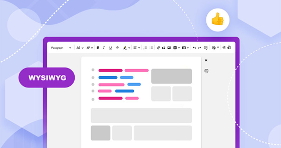

6. EDITORES HATML VISUALES
6. EDITORES HTML VISUALES
Aunque a lo largo del tema hemos visto cómo crear páginas web a partir de las etiquetas HTML, esta forma es la que se utilizaba hace años, pero actualmente no es muy habitual crearlas de esta manera.
Hoy en día, se utilizan los editores de HTML conocidos como WYSIWYG (What You See Is What You Get), lo que en español vendría a ser algo así como «Lo que ves es lo que obtienes», aunque no deja de ser un editor HTML visual, donde se pueden ver los cambios en tiempo real.
Por ejemplo, ponemos una imagen y se nos muestra un código HTML, resaltamos una palabra en negrita y se nos muestra otro código o, incluso ponemos un enlace y lo mismo, se nos indica el código.
Existen numerosos editores HTML WYSIWYG que ofrecen características como compatibilidad con varias vistas e idiomas. También ofrecen diseños preparados para crear sitios web, soporte para HTML5 y CSS3, etc.

Los editores HTML visuales permiten poner en escena todos los elementos necesarios para construir una web en HTML y, aunque como decimos, en desarrollo web ya no son muy usados, sí que se suelen utilizar para llevar a cabo pequeñas correcciones en códigos HTML que pueden estar equivocados, en bloques de códigos HTML en CMS's o fallarles alguna que otra etiqueta, ya que escribir código HTML no es tan fácil como parece, hay que tener un mínimo de conocimientos, puesto que podemos acabar escribiendo alguna etiqueta que no toque.
📝 ACTIVIDADES (10)
- Pulsa en el siguiente enlace que te lleva a un editor HTML visual online:
https://codepen.io/pen/
- Realiza una página web que cumpla las siguientes especificaciones:
- Elige un tema que te guste.
- Inserta los títulos que va a tener tu página (al menos 5 títulos).
- Inserta los párrafos de tu página (utiliza palabras o frases en negrita, cursiva, subrayada y en colores).
- Inserta al menos 3 imágenes alusivas al tema.
- Inserta alguna lista numerada y otra lista con viñetas.
- Inserta una tabla con datos que tengan que ver con el tema.
- Cuando termines la página, pulsa en el botón [Export HTML] que se encuentra en la esquina inferior derecha y expórtalo como .zip.
- Si entras dentro del archivo comprimido veras un documento de texto llamado "index", este es un archivo .html que si lo abres te permitirá visualizar tu web.
- Sube el archivo a la plataforma, en la tarea habilitada para esta actividad.
EJEMPLO DE PÁGINA WEB CREADA CON EL EDITOR VISUAL
Obra publicada con Licencia Creative Commons Reconocimiento Compartir igual 4.0